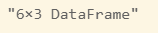

Manejo de bases con Julia¶
En esta página se aprenderá a crear e importar archivos en Julia usando diversas fuentes.
También se conocerá cómo hacer filtros y otro tipo de operacione sobre las bases con el fin de poder manipularlas.
Debido a que las tablas de datos no están implementadas de forma nativa, se debe usar un paquete que nos permita su creación y manipulación, por esta razón se usará el paquete DataFrames.
Lectura de datos¶
En Julia existen diversos paquetes que nos permiten importar y leer datos de archivos externos. En esta sección nos enfocaremos a la creación de conjuntos de datos.
Como se mencionó anteriormente, es necesario usar el paquete DataFrames.
Instalar el paquete
No olvide instalar el paquete DataFrames, de otro modo se obtendrá un error.
Creación de datos¶
Para crear conjuntos de datos de forma manual, se pueden usar las funciones definidas en el paquete DataFrames.
Por ejemplo, para crear el siguiente conjunto de datos
| nombre | grupo | puntaje |
|---|---|---|
| ANGELICA | A | 10 |
| BRENDA | A | 9 |
| LILIANA | B | 8 |
| MARCO | B | 8 |
| FABIAN | C | 9 |
| MAURICIO | C | 7 |
se puede escribir en la consola el siguiente comando:
1 2 3 4 5 | |
Este código crea un objeto llamado datos que es de tipo DataFrame. La forma de definir su contenido es mediante constructores que en este caso son las columnas, aunque pueden ser vectores definidos previamente.
Para saber el tipo del objeto datos podemos escribir en la consola el siguiente comando:
1 | |
DataFrame
Para visualizar el objeto, se puede usar el comando print(). El resultado se muestra a continuación.

Leyendo un archivo CSV¶
Para leer un archivo csv, recomienda el uso de los paquetes CSV y DataFrames.
El siguiente código muestra cómo importar un archivo csv a un objeto DataFrame.
1 2 3 | |
La primer línea carga los paquetes instalados previamente, para poder usar todas sus funciones y métodos. En la segunda, se usa la función CSV.read() especificándole el nombre de archivo y la función sink, en este caso será DataFrame, asignándolo al objeto mi_csv. Debido a que el archivo es grande se sugiere ver las dimensiones del dataframe usando la función summary().
Leyendo un archivo desde la web¶
Para leer archivos desde internet, se puede usar la función download() del paquete CSV.
El siguiente código muestra el uso de la función así como la forma de almacenarlo en un objeto DataFrame.
1 2 3 | |
Note que la función download() funciona como la referencia al nombre de archivo, y su argumento es una dirección web que apunte a un archivo CSV.
Manipulación de bases¶
En esta sección se muestra cómo manipular bases con el fin de trabajar directamente con ellas o realizar algunas operaciones, tales como ordenar una base, segmentarla o realizar uniones.
Tambien, en esta sección nos enfocaremos en conocer las propiedades de las bases, acceder a los elementos de la base, entre otros.
Explorando la base¶
Para saber la dimensión de un objeto DataFrame se puede usar la función summary(). Por ejemplo:
1 | |
El siguiente mensaje se muestra en la pantalla o ventana de resultados.

También es posible conocer los primeros y últimos renglones de una base con la función first() y last(). Por ejemplo, para obtener los primeros 3 y últimos 3 se puede usar este código.
1 2 | |
El siguiente mensaje se mostrará en pantalla.
Finalmente tambien es posible obtener estadísticas descriptivas del dataframe usando la siguiente instrucción.
1 | |
Accediendo a los datos¶
Como ya vimos anteriormente, las bases en Julia se guardan en un objeto DataFrame.
Para poder acceder a las variables, se pueden usar los corchetes cuadrados de la forma [renglon,columna], por ejemplo
1 2 3 4 | |
Seleccionar todos los renglones
Se puede usar ! en lugar de : para indicar que se deben seleccionar todos los elementos. No puede ir vacío.
Para elegir un elemento de un dataframe se puede usar la función getindex(), por ejemplo el siguiente código obtendrá del dataframe datos el tercer registro de la columna nombre.
1 | |
Filtrado de datos¶
Para realizar un filtrado, se puede usar la notación . para acceder a las propiedades de un dataframe y usar los nombres de variables.
El siguiente código muestra cómo obtener una filtro del dataframe datos, eligiendo a los alumnos que pertenecen al grupo A.
1 2 | |
Comparación
Note que se usa un punto antes de los operadores de comparación.
El resultado se muestra a continuación:

Tambien se puede usar la función in para elegir más de un valor.
1 2 | |

Para saber más del filtrado de datos, vea la documentación.
Creando nuevas variables¶
Para crear nuevas variable, se puede usar la notación . para crear en un dataframe el nuevo nombre de la variable.
El siguiente código muestra como crear una nueva variable llamada nota usando una función condicional.
1 2 | |
Note que se usa la notación .< para expresar que se quiere hacer la comparación por elemento y también la función ifelse. lo usa. El resultado se muestra a continuación.
Ordenando una base¶
Para ordenar una base, se requiere especificar una variable por la cual se deba ordenar. El siguiente ejemplo muestra cómo guardar un dataframe en un nuevo objeto ordenado por la variable nombre.
1 2 3 | |
El resultado se muestra a continuación
Cálculo en el dataframe
Se puede colocar un signo de admiración ! despues de la función sort para indicar que la operación se haga en el mismo dataframe. No se requiere guardar la base en un nuevo dataframe.
Datos agrupados¶
En julia es posible crear dataframes agrupados por alguna variable, en donde cada valor distinto corresponda a un grupo. Esto es relativamente útil cuando se desea segmentar una base formando grupos excluyentes entre sí.
El siguiente ejemplo muestra cómo crear una base agrupada.
1 2 | |
La función groupby crea una Dataframe agrupado del dataframe datos y lo almacena en el objeto datosg. La variable de agrupamiento es grupo.
Note que el tipo de dato es el siguiente:
1 | |
GroupedDataFrame{DataFrame}
Los datos agrupados son de gran ayuda ya que posteriormente nos permitirán realizar cálculos por grupos de variables, por ejemplo usando la función combine().
Uniones de bases¶
En Julia, es posible realizar uniones de tablas mediante uniones.
Supongase que se tienen las siguientes tablas, una de alumnos con sus grupos y calificaciones y otra de información de cada alumno.
Alumnos:
| nombre | grupo | puntaje |
|---|---|---|
| ANGELICA | A | 10 |
| BRENDA | A | 9 |
| LILIANA | B | 8 |
| MARCO | B | 8 |
| FABIAN | C | 9 |
| MAURICIO | C | 7 |
Informacion:
| nombre | apellidos | edad |
|---|---|---|
| ANGELICA | SANTIAGO | 20 |
| BRENDA | CAMACHO | 19 |
| LILIANA | BUENO | 18 |
| MARCO | BALDERAS | 18 |
| FABIAN | CASTILLO | 19 |
| MAURICIO | ZEPEDA | 27 |
El siguiente código muestra la unión de dos tablas mostradas anteriormente. Se usa la función innerjoin() cuyos argumentos son el nombre de las tablas que serán unidas, así como el nombre de la llave, en este caso común en ambas tablas.
1 | |
En este caso, el objeto generado es un DataFrame. El siguiente resultado se muestra al correr la función, en este caso el resultado se mostró directamente en el cuaderno de Jupyter.
Para mayor información sobre cómo realizar otro tipo de uniones, visite la documentación.